Multimedijalni sustavi
Ova stranica je izrađena kao projekt za vježbe kolegija Multimedijalni sustavi.
Ovdje možete pronaći moja omiljena umjetnička djela i malo informacija o njima
Dizajn za lepezu (1775.)
Fan design
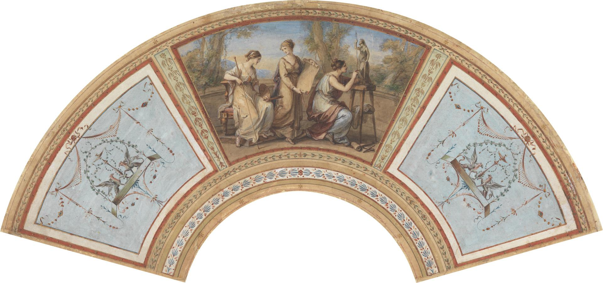
Izvor: Wikimedia Commons
- Angelica Kauffman (1741 - 1807)
- Teksturiran, krema tanki papir
- Dimenzije: 17.1 × 53.3 cm.
- Umjetnički pokret: Neoklasicizam
- Trenutačno je izložen u Yale Centeru za Britansku Umjetnost.
Na dizajnu za lepezu su prikazane tri ženske figure koji personificiraju umjetnost; slikarstvo, crtanje i kiparstvo.
Angelica Kauffman (puno ime: Maria Anna Angelika Kauffman) je bila Švicarska umjetnica. Uz Mary Moser, bila je jedna od dvije ženske slikarice među osnivačima Kraljevske akademije umjetnosti u Londonu 1768. godine. Zapamćena je primarno kao slikarica povijesti, ali je bila i vješta u slikanju portreta, pejzaža i dekoracija.
Također je bila talentirana pjevačića. Kauffman je bila prisiljena odabrati između umjetnosti i opere. Inspirirajući njezinu sliku "Self-Portrait of the Artist Hesitating between the Arts of Music and Painting".
Njezina identifikacija kao primarno povijesni slikar je bila neobična oznaka za umjetnicu u 18. stoljeuću. Povijesno slikarstvo, kako je definirano u akademskoj teoriji umjetnosti, klasificirano je kao najuzvišenija kategorija koja je zahtijevala opsežno učenje biblijske i klasične književnosti, poznavanje teorije umjetnosti i praktičnu obuku koja je uključivala proučavanje anatomije s muškog akta. Većini žena bio je uskraćen pristup takvoj obuci, posebno prilika da crtaju s aktova modela; no Kauffman je uspjela prijeći rodnu granicu.
Zanimljivo je da se muške figure u njezinim umjetničkim djelima smatraju ženstvenijima nego što bi većina slikara odabrala prikazati.
Trijumf Venere s tri gracije (18.st)
The Triumph of Venus with the Three Graces
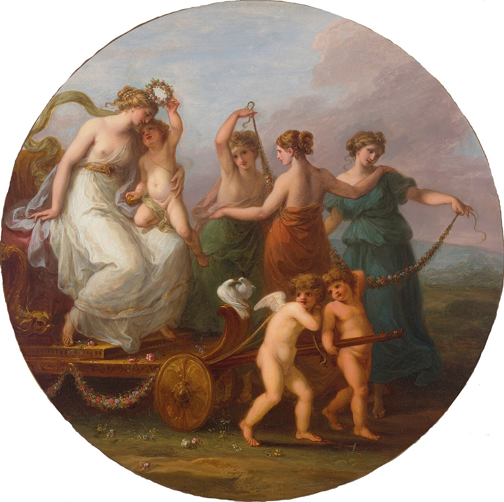
Izvor: Wikimmedia Commons
- Angelica Kauffman (1741. - 1807.)
- Ulje na platnu
- Dimenzije: 64.2 × 64.7 cm
- Umjetnički pokret: Neoklasicizam
- Trenutačno se drži u privatnoj kolekciji nakon što je prodana 1999. u Christie's London aukciji zajedno sa "Cimon and Iphigenia".
Na slici je prikazana rimska božica Venera kako sjedi u kočiji. Uz nju su Tri Gracije – božice gracioznosti i ljepote – koje drže vijence od cvjieća, te jedan kerub koji kruni Veneru cvijećem i dva dva keruba koji vuću koćiju.
Alegorija glazbe (1764.)
Allegory of Music
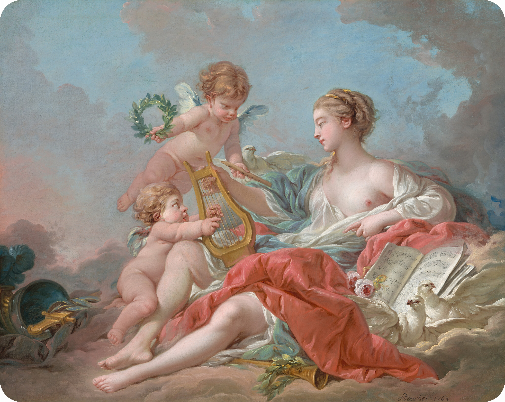
Izvor: Wikimedia Commons
{kind=link}
- François Boucher (1703. - 1770.)
- Ulje na platnu
- Dimenzije: 103.5 × 130 cm
- Umjetnički pokret: Rokoko
- Trenutačno izložen u Nacionalna galerija umjetnosti, Washington, US.
Na slici je prikazna žena – ponekad tumačena kao Venera, Harmonija ili jedna od muza – koja je okružena kerubinima koji personificiraju glazbu kroz simbola harfe, flaute i notnog zapisa. Prisutne su i golubice i ruže (simboli ljubavi, uglavnom božice Venere), te kaciga i mač (simboli rata, boga Marsa koji je Venerin muž).
François Boucher je bio Francuski umjetnik, crtač i bakropisac koji je slikao u rokoko stilu. Najviše je poznat po njegovom idiličnim i raskošnim slikama klasičnih tema, dekorativnim alegorijama i pastoralnim scenama.
Orhideja Cattleya i tri kolibrija (1871.)
Cattleya Orchid and Three Hummingbirds
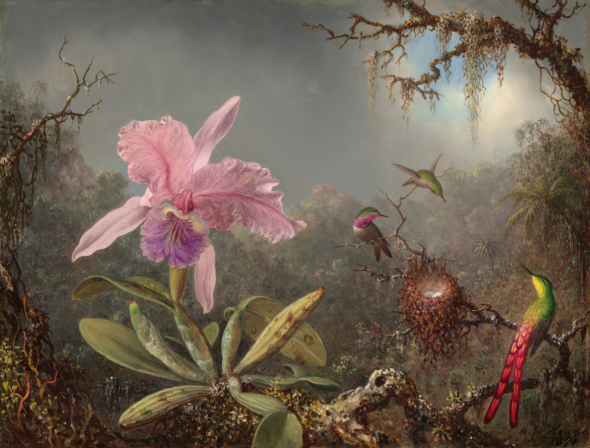
Izvor: Wikimedia Commons
{kind=link}
- Martin Johnson Heade (1819. - 1904.)
- Ulje na mahagonijskoj ploči
- Dimenzije: 34.8 × 45.6 cm
- Umjetnički pokret: Luminizm
- Trenutačno izloženo u Nacionalna galerija umjetnosti, Washington, USA
Martin Johnson Heade je bio Američki slikar poznat po svojim pejzažnima močvara, mora i prikazima kolibrića, često prikazanih s orhidejama, kao i cvjetovima lotosa i drugim mrtvim prirodama. Heade nije bio široko poznat umjetnik za života, ali njegov je rad privuka pozornost učenjaka, povjesničara umjetnosti i kolekcionara tijekom 1940-ih. Brzo je postao prepoznat kao važan američki umjetnik. Iako je često smatran umjetnik škole Hudson River, neki kritičakri i učenjaci prigovaraju toj kategorizaciji. Headeova djela sada se nalaze u velikim muzejima i zbirkama. Njegove slike povremeno se otkrivaju na neobičnim mjestima poput garažnih rasprodaja i buvljaka.
Prizor talijanske obale s ruševnim tornjem (1838.)
Italian Coast Scene with Ruined Tower
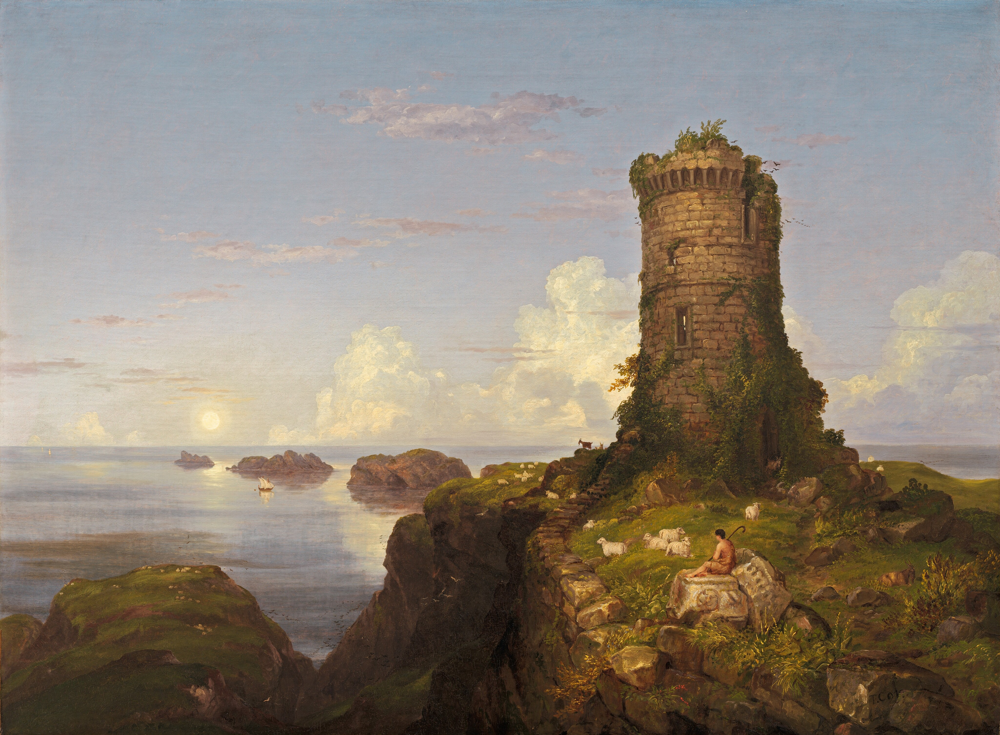
Izvor: Wikimedia Commons
{kind=link}
- Thomas Cole (1801. - 1848.)
- Ulje na platnu
- Dimenzije: 86.4 × 116.8 cm
- Umjetnički pokret: Romanticism
- Trenutačno izloženo u Nacionalna galerija umjetnosti, Wahington, USA
Thomas Cole bio je angloamerički umjetnik koji je utemeljio umjetnički pokret Hudson River School. Slikao je romantične pejzaže i povijesne slike. Njegova djela su uglavnom alegorična i često prikazuju malu figuru ili strukture postavljene nasuprot tmurnim i evokativnim prirodnim krajolicima. Obično su eskapistička, uokvirujući Novi svijet kao prirodni raj u kontrastu sa Britanskim gradskim pejzažima ispunjene smogom iz doba industirjske revolucije u kojoj je odrastao. Njegova djela, često smatrana konzervativnima, kritiziraju suvremene trendove industrijalizma, urbanizma i širenje prema zapadu.
Ruševine Partenona (1880.)
Ruins of the Parthenon
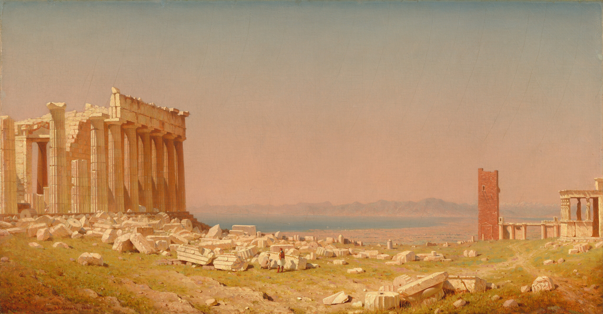
Izvor: Wikimedia Commons
- Sanford Robinson Gifford (1823. - 1880.)
- Ulje na platnu
- Dimenzije: 69.53 × 132.72 cm
- Umjetnički pokret: Hudson River School
- Trenutačno izloženo u Nacionalna galerija umjetnosti, Wahington, USA
- Mnogi vide ovu sliku kao odgovor na sliku "The Parthenon" (1871.) koju je naslikao Giffordov prijatelj Frederic Edwin Church.
_Frederic_Edwin_Church.jpg){kind=link}
Sanford Robinson Gifford je bio američki slikar pejzaža i vodeći član druge generacije umjetnika škole Hudson River. Visoko cijenjeni praktičar luminizma, njegov rad bio je poznat po naglaskau na svjetlosti i mekim atmosferskim efektima.
Gifford je Ruševine Partenona - svoju posljednju važnu sliku - smatrao krunskim postignućem svoje karijere i nadao se da će je otkupiti neki američki muzej. Kada je posjetio Galeriju umjetnosti Corcoran u Washingtonu, D.C., i stigao do galerije u kojoj se nalazi Churchova Niagara, primijetio je: "bilo bi dobro mjesto za moj 'Partenona'." Iako slika nije bila prodana nakon Giffordove smrti, Corcoran ju je kupio na rasprodaji svoje imovine 1881. za $5,100 dolara, što je u to vrijeme bila najviša cijena ikad plaćena za jednu od umjetnikovih slika.
Duh rata (1851.)
The Spirit of War
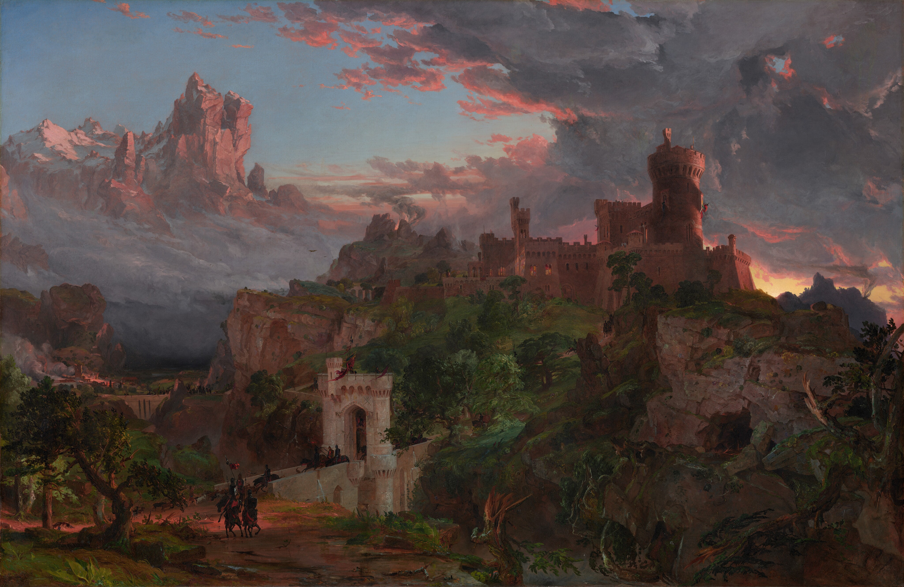
Izvor: Wikimedia Commons
{kind=link}
- Jasper Francis Cropsey (1823. - 1900.)
- Ulje na platnu
- Dimenzije: 110.8 × 171.6 cm
- Umjetnički pokret: Hudson River School
- Trenutačno izložen je u Nacionalna galerija Umjetnost, Washington, US.
- Popratno djelo: Duh mira (The Spirit of Peace)(1851.)
Jasper Francis Cropsey bio je američki arhitekt i umjetnik. Najbolje je poznat po njegovim pejzažnim djelima škole rijeke Hudson.
Apolon Belvederski (AD 120. - 140.)
Apollo Belvedre
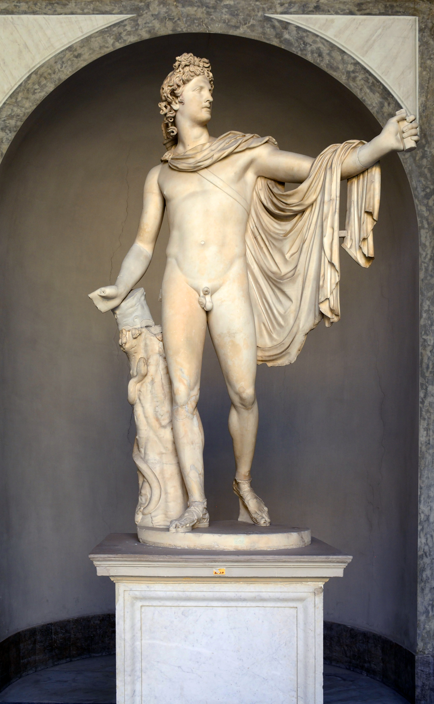
Izvor: Wikimedia Commons
{kind=link}
- Bijeli mramor
- Dimenzije: 2,24 m
- Umjetnički pokret: Antika
- Alternativna imena: Belvederski Apolon, Apolon s Belvedera, Pitijski Apolon
- Trenutačno izložen u u Cortile del Belvedere u sklopu muzeja Pio-Klementine u Vatikanskom muzeju.
Ova skulptura prikazuje grčkog boga Apolona kao strijelca koji je upravi ispalio strijelu. Iako ne postoji suglasnot o točnom narativnom detalju koji je prikazan, konvencionalno mišljenje je da ju upravo ubio zmiju Pitona koja čuva Delfe što čini skulpturu Pitijskim Apolonom – jedno od alternatinih imena skulpture. Druga mišljenja je ubojstvo titana Titija, koji je prijetio njegovoj majci Leto, ili ubojstvo Niobidima. Skulptura se smatra da je Rimska kopija originalne brončane koju je stvorio grčki kipar Leochares. Od sredine 18. stoljeća neoklacisti je smatraju najboljom antičkom skulpturom, a stoljećima je utjelovao estetiku savršenstva za Europljane i zapadnjačke dijelove svijeta. The Apollo Belvedere was featured in the official logo of the Apollo 17 Moon landing mission in 1972.
Apollo pobjednički nad Pitonom
Apollo Victorious over Python
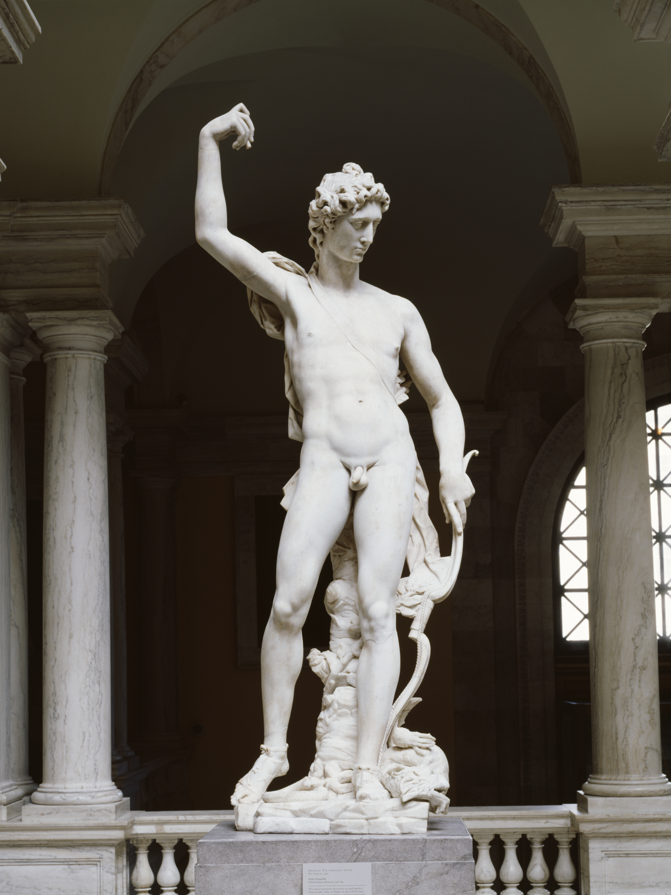
Izvor: Wikimedia Commons
{kind=link}
- Pietro Francavilla (1548. - 1615.)
- Bijeli mramor
- Dimenzije: 1,60.5 m
- Umjetnički pokret: Renesansa
- Trenutačno je izložen u Umjetničkom Muzeju Walters
Ova skultura predstavlja Apolonov prvi trijumf protiv Pitona koji leži mrtav pred njegovim nogama. Apolon je utjelovio ideale muške ljepote i herojstva.
Skulpturovo ime i datum su ugravirani su na Apolonovim prsima. Pietro Francavilla je bio francusko-flamanski kipar koji je izrađivao skulpture u kasnomanirističkoj tradicij.
Latona i njezina djeca, Apolon i Djiana
Latona and Her Children, Apollo and Diana
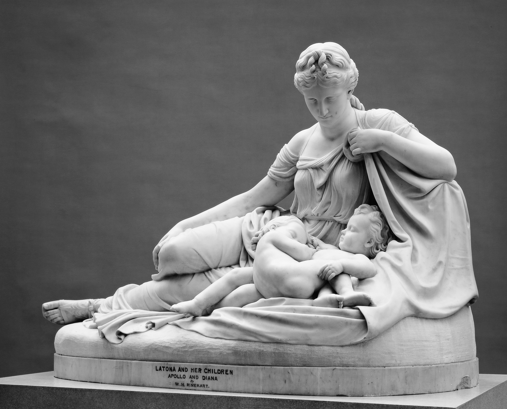
Izvor: Muzej umjetnosti Metropolitan
- William Henry Rinehart (1825. - 1874.)
- Bijeli mramor
- Dimenzije: 117.2 × 167 × 78.8 cm
- Umjetnički pokret: (Američki) Neoklasicizam
- Trenutačno je izložen u Muzej umjetnosti Metropolitan
Božica Latona s ljubavlju gelda svoju usnulu djecu, Apolona i Djianu.
William Henry Rinehart bio je pozanti američki kipar. Smatra se "posljednjim važnim američkim kipariom koji je radio u klasičnom stilu".
Lukrecija Ubada Sebe (15.-16.st.)
Lucretia Stabbing Herself
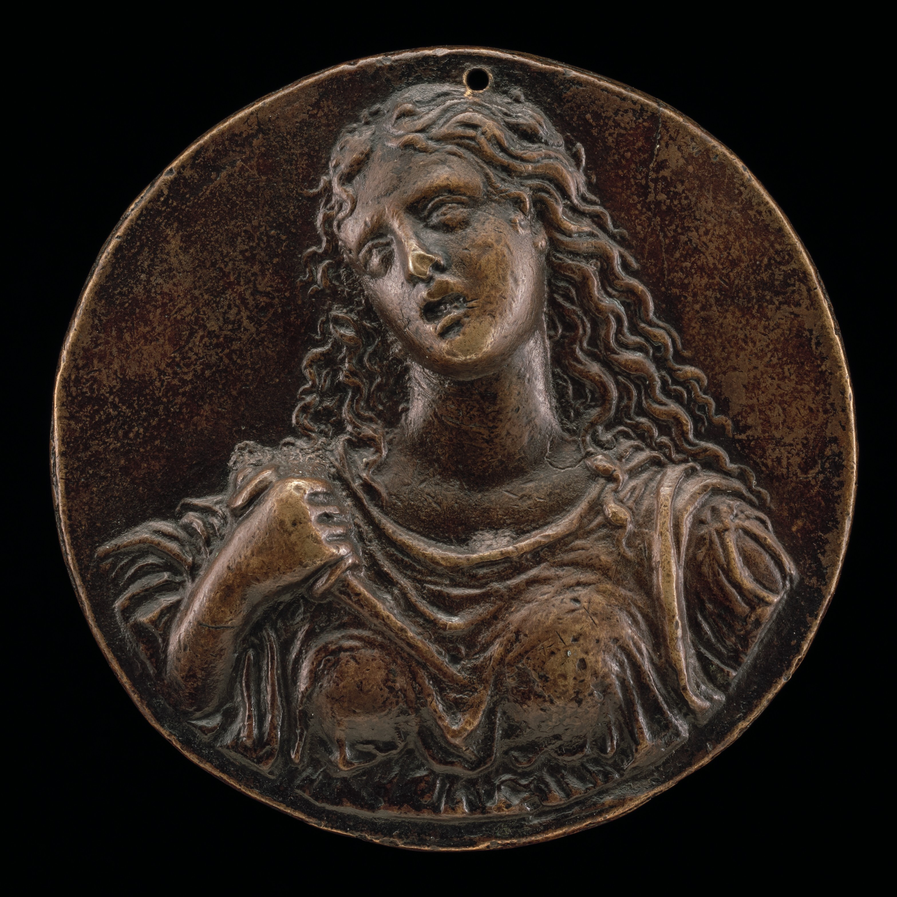
Izvor: Wikimedia Commons
{kind=link}
- Moderno (Galeazzo Mondella) (1467. - 1528.)
- Bronca/tamnosmeđa patina
- Dimenzije: 5.12 cm
- Umjetnički pokret: (talijanska) Renesansa
- Trenutačno je izložena i Nacionoj galeriji umjetnosti, Washington, US.
Mala brončana plaketa koja prikzuje samoubojstvo rimske heroine Lukrecije kako bi sačuvala svoju čast nakon što ju je Sekst Tarkvinije, sin kralja Lucija, silovao. Njezino samoubojstvo je izazvalo pobuno koja je svrgnula rimsku monarhiju i dovela do prelaska rimske vlasti iz kraljevstva u republiku.
Moderno je bio talijasnki zlatar i medaljar koji je postao jedan od najvažnijig dizajnera brončanih plaketa tijekom talijanske renesanse. Svoj nadimak "Moderno" ("Moderni") dobio je 1487. na početku svoje karijere kao medaljaš na dvoru u Mantovi. Nadimak je odabro kao kontrast njegovom suvremeniku Pieru Jacopu Alari Bonacolsiju koji je iste godine nazvan "Atico" ("Drevni").
Apolon
Apollo
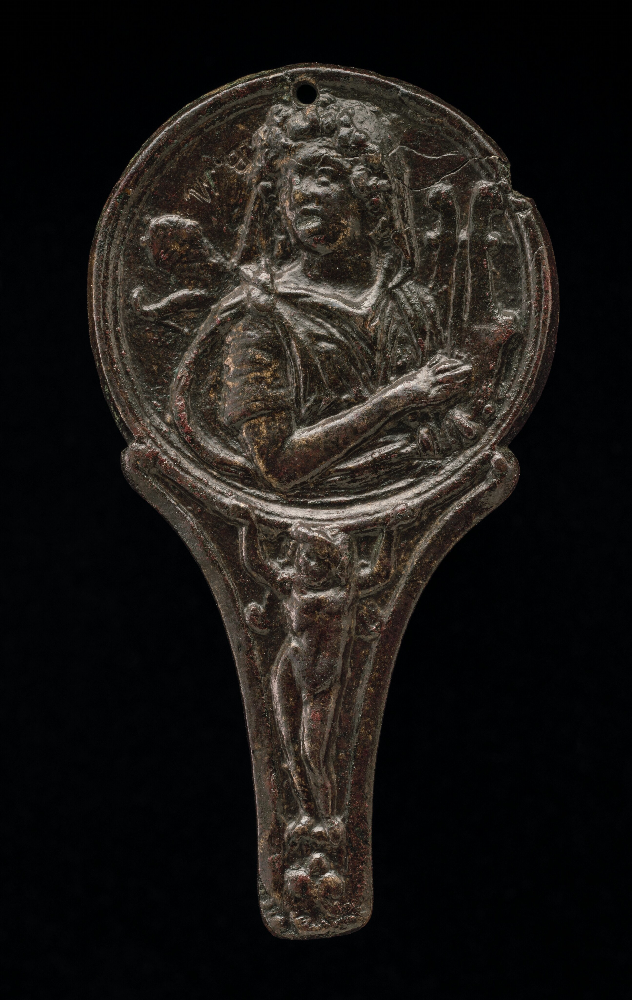
Izvor: Wikimedia Commons
{kind=link}
- Padova 16.st.
- Bronca/tamnosmeđa patina
- Dimenzije: 6.91 × 3.71 cm
- Umjetnički pokret: (talijanska) Renesansa
- Trenutačno je izložen u Nacionalnoj galeriji umjetnosti, Washington, US.
Točan umjetnik nije poznat, ali se zna da je djelo napravljeno u Padovi, Italija tijekom 16. stoljeća.
Na ovoj kružnoj plaketi prikazan je grčki bog Apolon koji drži liru, inspirirano klasičnom rimskom umjetnošću.
Krastača s krastačom
A Toad with a Toad
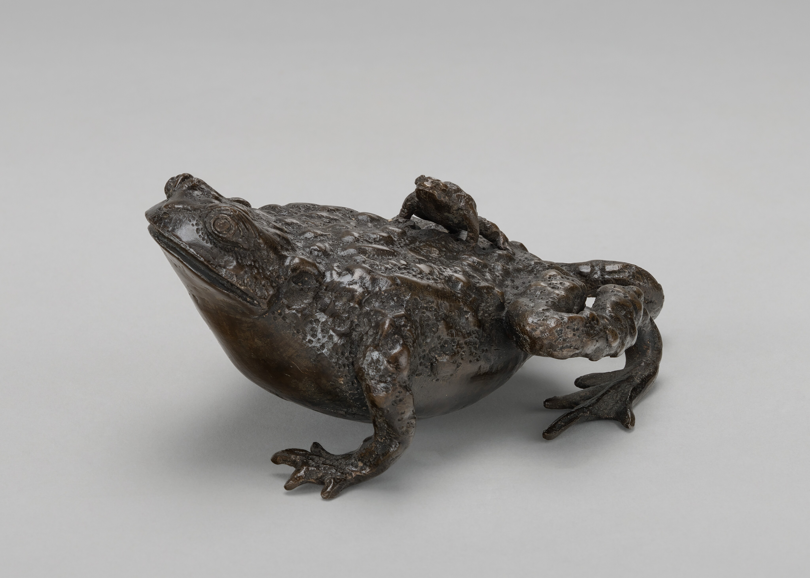
Izvor: Wikimedia Commons
{kind=link}
- Padova 16.st.
- Bronca/tamnosmeđa patina
- Dimenzije: 6 × 13.1 × 8.6 cm
- Umjetnički pokret: (talijanska) Renesansa
- Trenutačno je izložen u Nacionalnoj galeriji umjetnosti, Washington, US.
Točan umjetnik nije poznat, ali se zna da je djelo napravljeno u Padovi, Italija tijekom 16. stoljeća.
Brončana skulptura koja prikazauje malu krastaču na leđim veće, često interpretirano kao uteg za papir ili ukras za stol.
Amazonka se priprema za borbu ili naoružana Venera (1882.)
Amazon Preparing for Battle, or Armed Venus
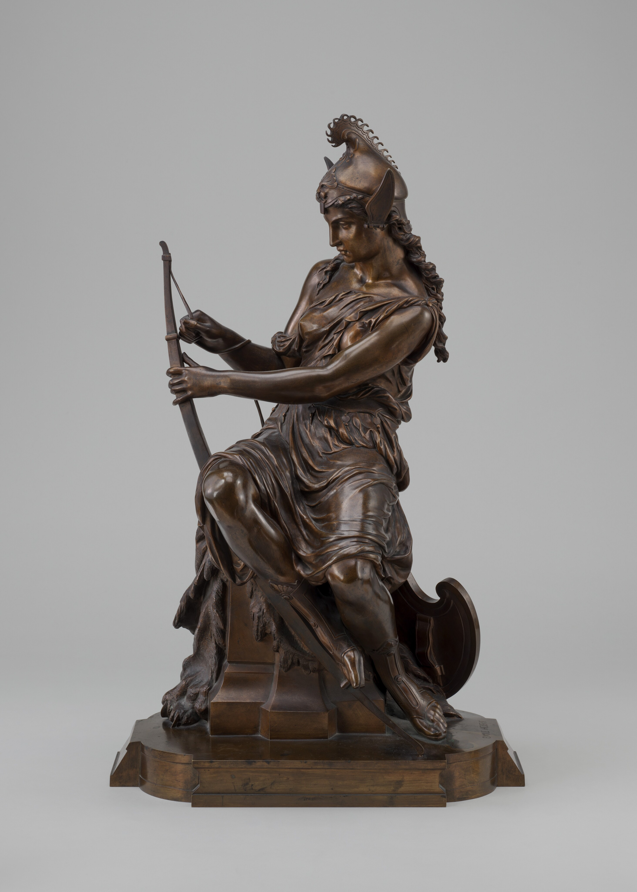
Izvor: Nacionalna galerija za umjetnost
- Pierre-Eugène-Emile Hébert
- Bronca
- Dimenzije: 65.3 × 40.6 × 26.6 cm
- Trenutačno je izložena u Nacionalnoj galeriji umjetnosti, Washington, US.
Skulptura prikazuje Amazonsku ratnicu kako se priprema za borbu zatezanjem velikog luka. Nije jasno je li ratnica u pitanju Kraljica Antiopa ili Hipolita ili pak božica Venera. Pierre-Eugène-Emile Hébert je bio francuski skulptor. Njegov otac, Pierre Hébert, i sestra, Émile Hébert, su također bili skulptori.